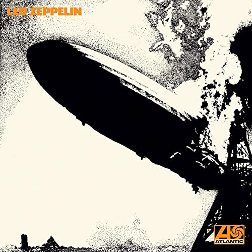
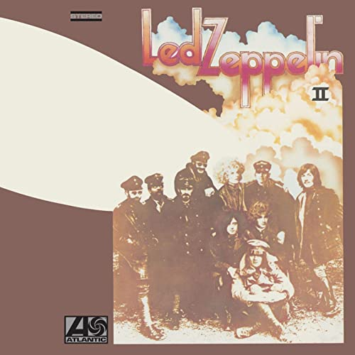
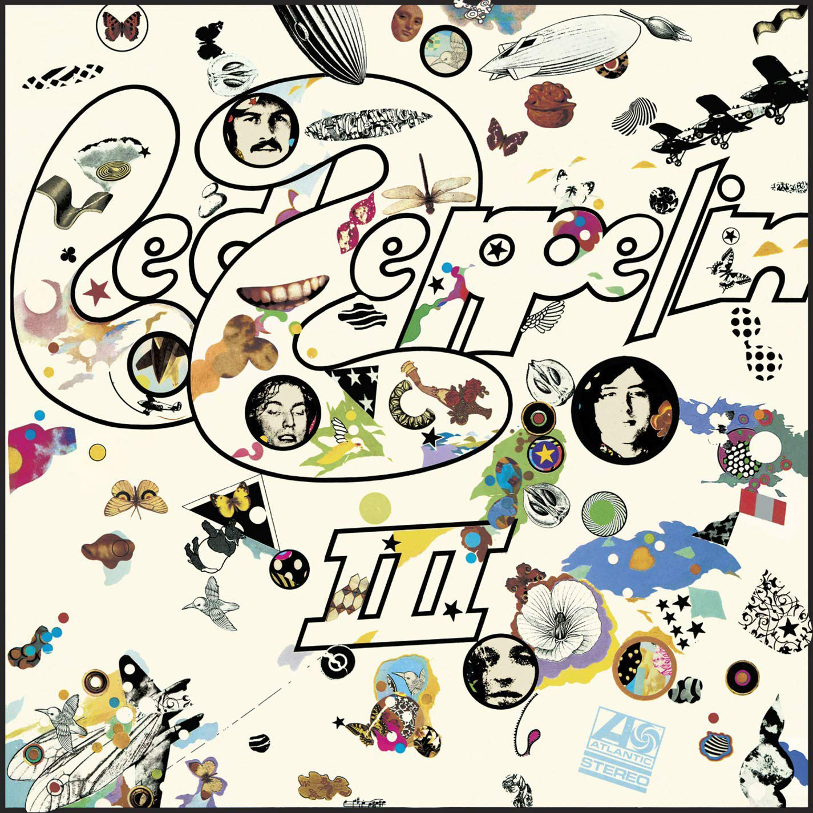
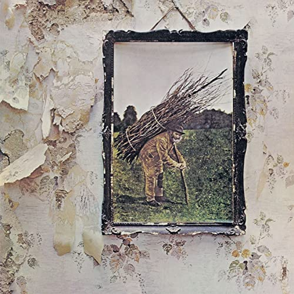
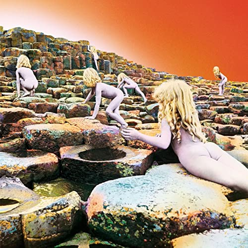
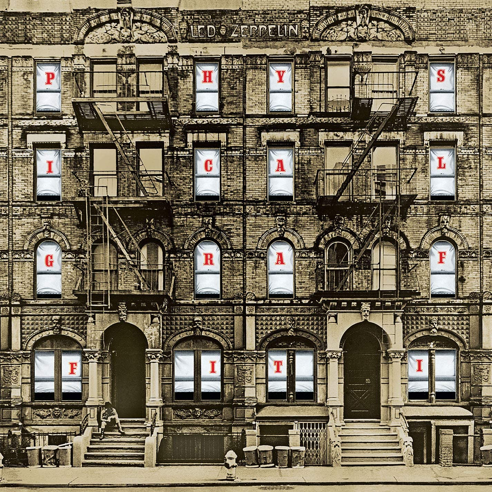

Discografía Led Zeppelin

Led Zeppelin (1969)
TRACKLIST
- Good Times Bad Times
- Babe I'm Gonna Leave You
- You Shook Me
- Dazed And Confused
- Your Time Is Gonna Come
- Black Mountain Side
- Communication Breakdown
- I Can't Quit You Baby
- How Many More Times

Led Zeppelin II (1969)
TRACKLIST
- Whole Lotta Love
- What is and What Should Never Be
- The Lemon Song
- Thank You
- Heartbreaker
- Living Loving Maid (She's Just A Woman)
- Ramble On
- Moby Dick
- Bring It On Home

Led Zeppelin III (1970)
TRACKLIST
- Immigrant Song
- Friends
- Celebration Day
- Since I've Been Loving You
- Out On The Tiles
- Gallows Pole
- Tangerine
- That's The Way
- Bron-Y-Aur Stomp

Led Zeppelin IV (1971)
TRACKLIST
- Black Dog
- Rock And Roll
- The Battle Of Evermore
- Stairway To Heaven
- Four Sticks
- Going To California
- When The Levee Breaks
- I Can't Quit You Baby
- How Many More Times

Houses of The Holy
TRACKLIST
- The Song Remains }the same
- The rain song
- Over the hills and far away
- The crunge
- Dancing days
- D'yer mak'er
- No quarter
- The ocean

PHYSICAL GRAFFITI (1975)
TRACKLIST
- Custard Pie
- The Rover
- In My Time Of Dying
- Houses Of The Holy
- Trampled Under Foot
- Kashmir
- In The Light
- Bron-Yr-Aur
- Ten Years Gone
- Night Flight
- The Wanton Song
- Boogie With Stu
- Black Country Woman
- Sick Again